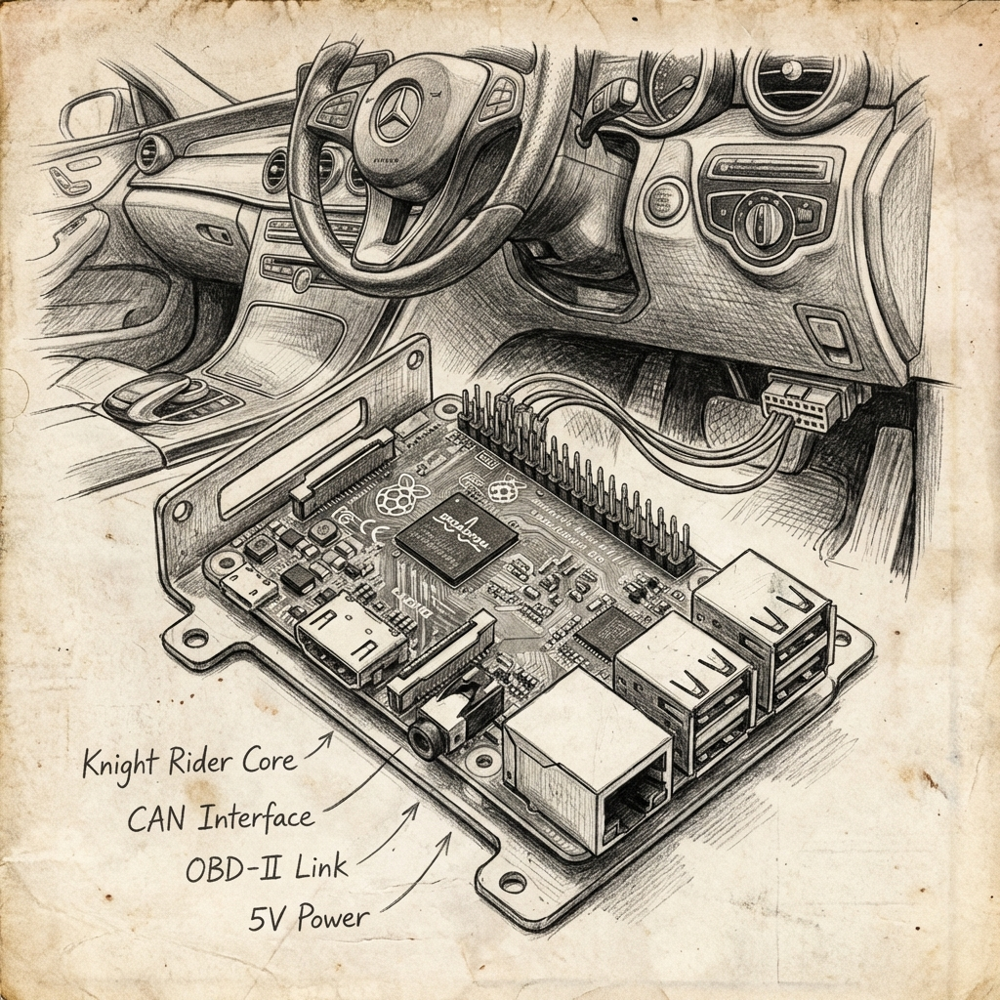
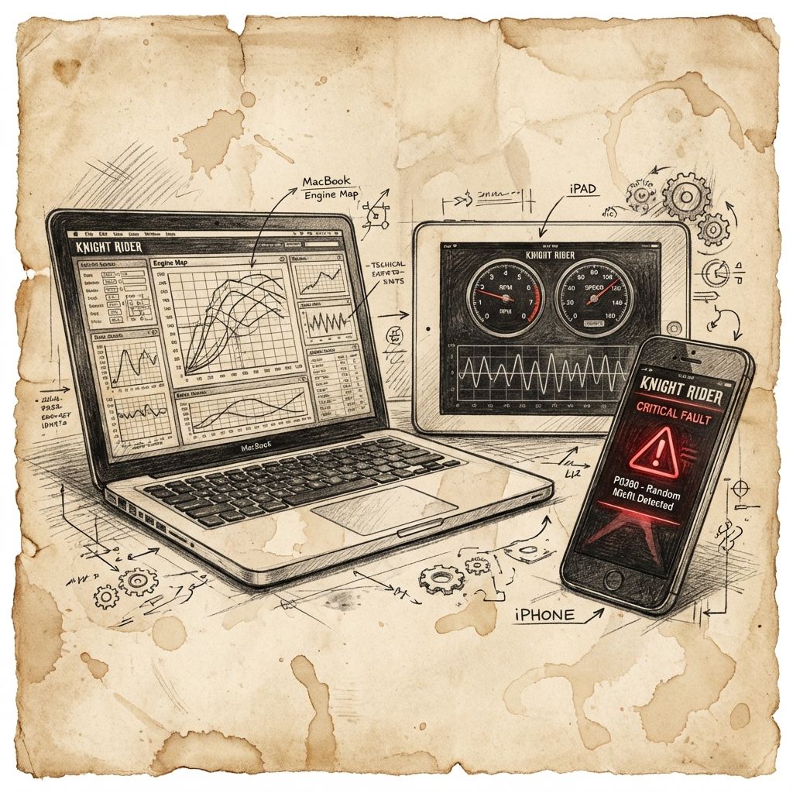

The Mission
In Zimbabwe, auto-diagnostics is a walled garden. Prohibitive import costs mean consumers and local shops are locked out of their own engine's intelligence.
This is so much that diagnostics still exists as a separate layer in the industry.
This is just an information problem.
KnightRider is the compressed embodiment of that layer. Built in Rust for reliability, we are engineering a local solution to bridge this technological gap.



Design Goals
- Vast Vehicle Database.
- Accurate ECU Diagnostics.
- Easy to Use.
The Road Ahead
A roadmap sketched in the heat of research.
The Scaffolding
System core built in Rust. CAN bus foundations ready.
Genesis Phase
Deep research & hardware sourcing. Finding the Pi milestones...
The Lab
Experimental phase @ Toyo-Tech with Carti & team.
Hardware V1
First field-ready units and live CAN data analysis.
Keep an eye on us on this platform...
Investors aren't needed just yet, but the vision is growing.Regular updates are added on the roadmap above. Join the journey.